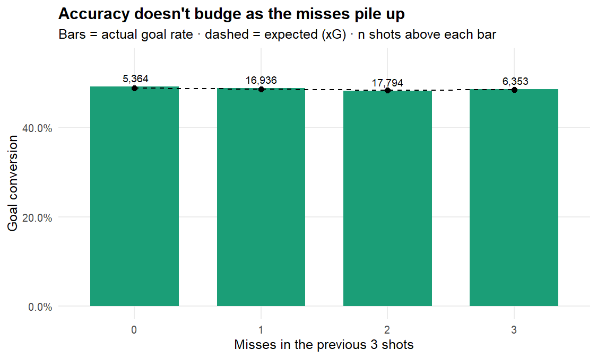
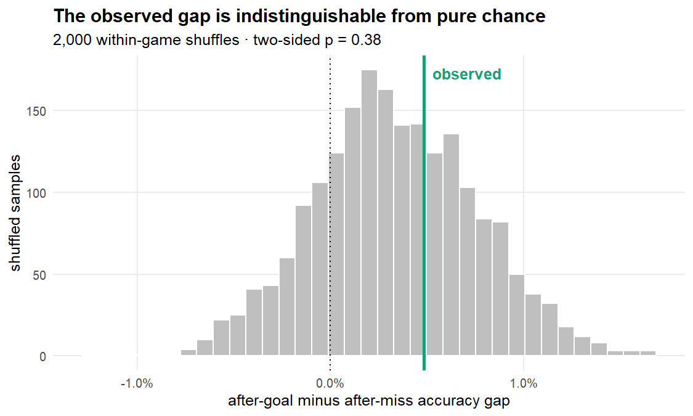

Do missed shots beget missed shots?
Source:vignettes/articles/shot-accuracy-streaks.Rmd
shot-accuracy-streaks.Rmd“He’s missed two in a row — you can see the heads dropping, they just can’t buy a goal right now.”
Every AFL broadcast leans on it: a team that’s been missing shots is more likely to keep missing. Goals beget goals, misses beget misses, momentum is real. It’s such a natural story that nobody checks it.
This article checks it — and doubles as a worked example of getting
real analysis out of torpdata with nothing
but the torp package. The trick that makes it a
fair test is torp’s expected-goals model: every shot carries a
goal_prob (its expected conversion rate), which lets us
separate two things tangled inside any naive “accuracy after a miss”
number:
- Genuine momentum — the psychological cold streak commentators describe.
- Shot selection — a team pinned in its defensive half takes harder shots that also happen to follow other misses. That’s geometry, not nerves.
Without an xG control you can’t tell these apart. With one, we can.
Getting the data
Everything below pulls straight from torpdata’s public GitHub
Releases via load_pbp() — no local files
needed. If you have torp installed, this runs
as-is:
library(torp)
library(dplyr)
# load_pbp() downloads play-by-play from torpdata's GitHub Releases (cached
# locally after the first call). We request only the 9 columns we need of ~180.
shots <- load_pbp(
seasons = 2021:2025,
columns = c("match_id", "season", "period", "period_seconds", "display_order",
"team", "points_shot", "goal_prob", "shot_row")
) |>
filter(shot_row == 1) |> # shot-at-goal rows only
mutate(
made = as.integer(points_shot == 6 & !is.na(points_shot)), # 1 = goal, 0 = behind/no-score
xg = goal_prob # torp's xG: expected P(goal)
) |>
filter(!is.na(xg))That gives us 52,813 shots at goal across 2021–2025, spanning 2,122 team-games (a “team-game” = one team’s shots in one match, the natural unit for a streak). Accuracy is defined as P(goal) — a behind or a complete miss both count as failing to convert, exactly the event the commentator means.
The streak features come next: order each team’s shots chronologically within its game, then look back.
shots <- shots |>
arrange(match_id, team, period, period_seconds, display_order) |> # chronological per team-game
group_by(match_id, team) |>
mutate(
prev_made = lag(made), # outcome of the immediately prior shot
prev_misses_k = { # misses among the previous 3 shots
miss <- 1L - made; k <- 3L
vapply(seq_along(miss),
function(i) if (i <= k) NA_integer_ else sum(miss[(i - k):(i - 1)]),
integer(1))
},
cold = as.integer(prev_misses_k == 3L) # 1 = missed all of the last 3
) |>
ungroup()A quick sanity check that the xG model isn’t lying to us:
| Metric | Value |
|---|---|
| Actual goal rate | 48.4% |
| Mean expected (xG) | 48.4% |
The realised goal rate and the average xG agree to the decimal, so we’re measuring momentum against a well-calibrated baseline — not chasing a broken model.
Test 1 — the naive number (no difficulty control)
This is the figure a commentator would implicitly quote: accuracy on shots that follow a goal versus shots that follow a miss.
| Previous shot | n | Accuracy | Mean xG |
|---|---|---|---|
| after a GOAL | 24,571 | 48.7% | 48.3% |
| after a MISS | 26,120 | 48.2% | 48.5% |
After a goal, teams convert at 48.7%; after a miss, 48.2%. A gap of just +0.5 percentage points — and notice the Mean xG column barely moves either, a first hint that shot difficulty isn’t doing much work here.
Test 2 — the honest number (xG-adjusted)
Now we let the xG model absorb shot difficulty and ask whether the
previous outcome still predicts the next, via a logistic
regression made ~ prev_made + smooth(xg). If “misses beget
misses” is real beyond difficulty, the prev_made
coefficient is positive and significant.
m <- glm(made ~ prev_made + ns(xg, df = 4),
data = filter(shots, !is.na(prev_made)), family = binomial)
co <- summary(m)$coefficients["prev_made", ]| Term | Odds ratio | p-value |
|---|---|---|
| previous shot was a goal | 1.039 | 0.050 |
An odds ratio of 1.039 (p = 0.050), sitting right on the 0.05 borderline. The direction is the momentum one — a touch more accurate after a goal, a touch worse after a miss — so taken at face value this is a faint nod toward the cliché. But emphasis on faint: a ~4% shift in the odds, barely separable from zero — and, as Test 4 confirms, a gap this size turns up just by shuffling the shot order at random. So: the right direction, but a whisper. The truly demanding test is the one commentators actually invoke — not the single previous shot, but a cold streak.
Test 3 — the cold streak
“They’ve gone cold” means several misses in a row. Here is accuracy after a team has missed its last 3 shots, versus everything else:
| State | n | Accuracy | Mean xG | Acc - xG |
|---|---|---|---|---|
| cold (last 3 missed) | 6,353 | 48.4% | 48.4% | +0.1% |
| not cold | 40,094 | 48.5% | 48.4% | +0.1% |
The xG-adjusted cold-streak effect: odds ratio 1.001, p = 0.98. That is as close to nothing as a result gets. A team that has just missed three straight converts its next shot at precisely its expected rate. The drought lives entirely in the highlight reel. (By construction this compares only shots taken once a team already has three on the board, so each game’s opening trio sits out — a smaller, later-in-game sample than Tests 1–2.)
The dose-response view makes it visual — accuracy is flat no matter how many of the last three shots were missed:

plot of chunk plot-dose
Test 4 — the streakiness illusion (a shuffled null)
There’s a subtle trap here, famous enough to have rewritten the academic literature: naive conditional rates are biased in finite samples. Miller & Sanjurjo (2018) is the famous case — even a perfectly random shooter tends to look worse right after a make, which is how the original 1985 “hot hand fallacy” study fooled itself. The general moral holds beyond that one effect: a finite, pooled dataset can manufacture an apparent conditional gap with no real streak behind it. So you don’t eyeball the raw gap — you measure what chance alone produces.
So a clean test shuffles each team’s shots within its own game — destroying any real streak while preserving that game’s mix of shot difficulties — and rebuilds the null distribution of the raw gap empirically.
set.seed(42)
perm_gap <- function() {
s <- shots |> group_by(match_id, team) |>
mutate(made_s = sample(made), prev_s = lag(made_s)) |> ungroup() |>
filter(!is.na(prev_s))
mean(s$made_s[s$prev_s == 1]) - mean(s$made_s[s$prev_s == 0])
}
null_gaps <- replicate(2000, perm_gap())
p_perm <- mean(abs(null_gaps) >= abs(gap_raw))
stopifnot("degenerate permutation null" = !is.na(p_perm)) # guard against NaN baking in
plot of chunk perm-plot
The observed gap (green line, +0.5 pts) sits comfortably inside the cloud of random shuffles — p = 0.38, nowhere near significant. And notice the null is not centred on zero: it holds steady at +0.34 pts across 2,000 shuffles. Pooling games of differing goal rates manufactures a small positive after-goal/after-miss gap on its own — higher-scoring games contribute proportionally more “after a goal” shots, lower-scoring games more “after a miss” shots. So Test 1’s raw gap is essentially that sampling artifact: shuffle the order at random and the very same gap shows up.
Verdict
So, are the commentators right? No. Across 52,813 shots, once you account for which shots a team takes, a recent miss carries no predictive signal for the next shot. The cold-streak effect — the strongest form of the claim — is statistically dead flat (p ≈ 0.98). And the faint lag-1 wobble doesn’t survive a proper empirical null.
Missing shots do not beget missing shots. Each set shot is, to a very good approximation, an independent attempt at its own difficulty. The “they can’t buy a goal” narrative is humans doing what humans do best: finding stories in noise.
Caveats worth a follow-up
- Team-level, not player-level. A genuine individual yips could exist and wash out when pooled across a team’s shooters. Re-running on a player-shot sequence would test that.
-
“Cold” is one definition. This used all
three of the last three shots missed, with no quarter reset. Looser
windows (2-of-3) or resetting momentum at the breaks are easy variants —
just change the
colddefinition in the features chunk above. - Set shots only. This is shots at goal; it says nothing about general-play momentum (clearances, inside-50s), where a team-level “wave” is more plausible.
Everything here is reproducible from the code shown —
load_pbp() and base modelling tools, no private
data.